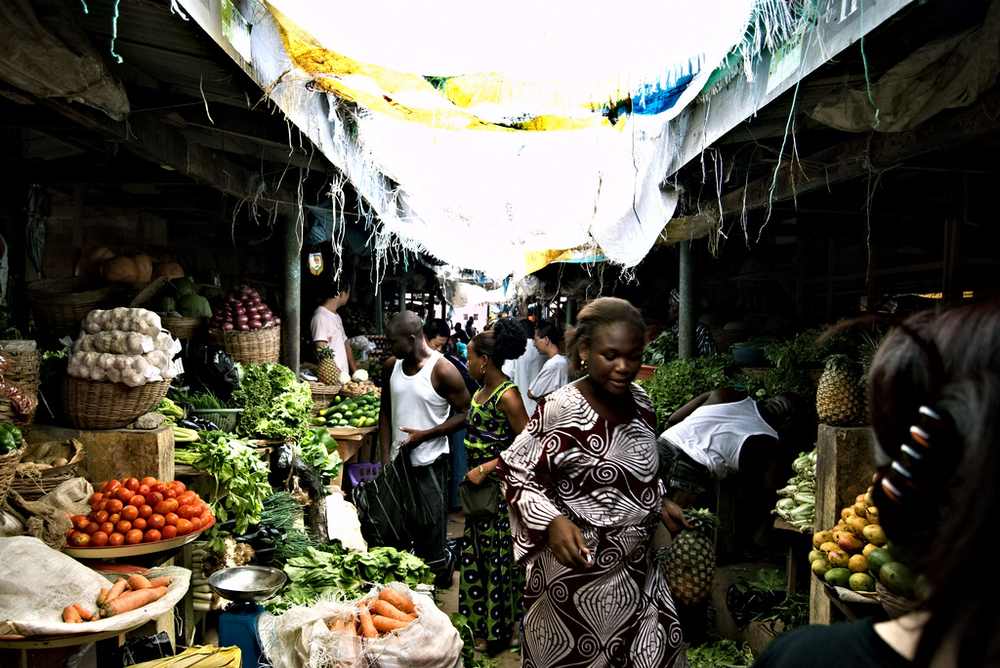
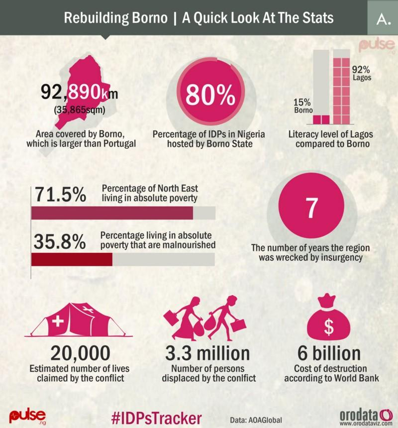
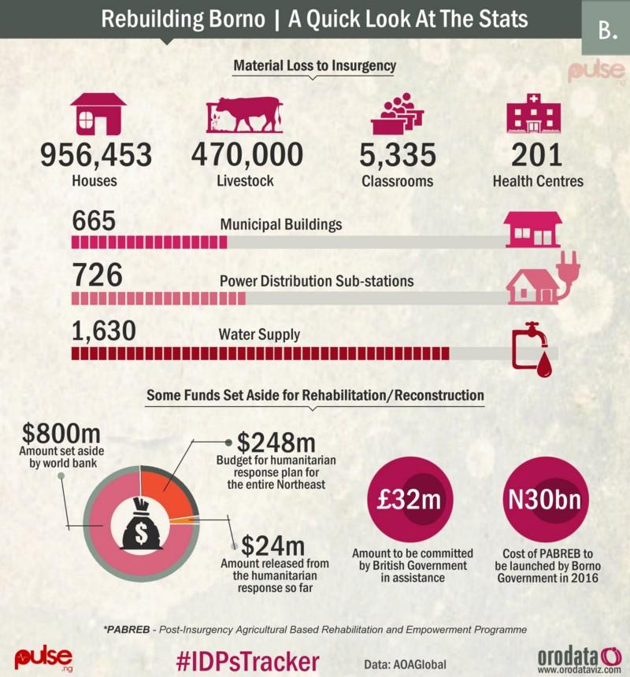

Retelling the stories of displaced people in Nigeria with data
Years of conflict have displaced over 2.2 million people in Nigeria. Tired of hearing horrific news stories with nothing being done, Blaise Aboh used data visualisation to raise awareness and demand more open data from humanitarian groups

Lekki Marke in Lagos, Nigeria. CC BY 2.0, uploaded by [shawnleishman](https://www.flickr.com/photos/shawnleishman/2349218847/in/photolist-4zAmVe-6dXg9g-oZNftB-4AH6WH-7JAwzD-8bJpin-8qXNYG-dkX1Zq-8bJNxM-5sgWWv-7gpKPK-4zBqte-daMAX5-ChobMM-ACJyW-7CrAXk-9dDyty-53W3jC-51MyGD-25awK-25awH-7hKp5A-53FFpd-51RKW5-bdze7V-7JBRJj-25afL-7hKoqf-9to7sZ-6e2uTG-4AbHnb-eejFku-4A4iPJ-kNAHQw-4zVqGy-hiLB8-4AvruG-DFTo6B-51Mwii-ejE9mz-6dXi4P-ejKTKq-oF3hX-oF3in-oF2bK-oF2cb-oF2cy-cafzEW-qYLj48-8Nt67D “shawnleishman").
By Blaise Aboh, Founding Partner and Analytical Design and Data Lead at Orodata Nigeria
Towards the end of 2015 I became weary of the consistently tragic news of Internally Displaced Persons (IDPs) being reported in Nigeria.
Their food was being stolen and resold, their women and girls were being raped and trafficked, their food was being exchanged for sex, and their tents and other resources were being taken away.
Security was a great challenge for IDPs, too. In February 2016, 50 people were killed by a suicide bomb attack in a camp in Dikwa, and news of 1,200 IDPs dying of starvation and illness in the Bama camp in Borno, including almost 500 children, shocked everyone.
Looking at the crisis, it is important to point out how we got here. Nigeria has ignored all indicators and data pointing to the worsening conditions and elements that lead to this.
Borno State is a state in north-eastern Nigeria, and Maiduguri is its capital. In the last seven years, the state has been devastated by conflict caused by Boko Haram. The conflict in the North East claimed an estimated 20,000 lives and displaced around 2.2 million people with a material loss of $6bn, according to World Bank, European Union and the United Nations, therefore precipitating a grave humanitarian crisis and gaining global attention.
The crisis has lead to the displacement of people spread across Northern Nigerian states such as Adamawa, Bauchi, Bauchi, Benue, FCT, Gombe, Kaduna, Kano, Nassarawa, Plateau, Taraba, Yobe and Zamfara. Many of these states have continued to exhibit the worst human development indicators in the world, with 71.5% living in absolute poverty and more than half malnourished, making it the poorest part of the country, according AOA Global’s Rebuild Borno report.
Nigerians in their numbers have been outraged. However, I personally got fed up because it so seemed that those who were ‘outraged’ would soon go back to their businesses until there was another upsetting story about IDPs in the news. Because without being followed by informed, positive action, ‘outrage’ is meaningless.
Exposing information gaps
I looked deep into my own Civic Tech startup, Orodata Nigeria, to see what we could do.
I realised that to solve the problems, or lay the foundations for them to be solved, we needed to improve access to information about IDPs, including by demanding more open data and promoting it among civil society.
The open data movement is still relatively new to Nigeria. The country only joined the Open Government Partnership in June 2016, and is in the early stages of advocating and planning for better provision of open data nationally.
With a relatively weak data infrastructure, data related to IDPs is scarce. But the data that does exist – that from International Organization for Migration, for example – is hugely important.
Making IDP data more accessible
We decided that there needed to be a knowledge base with relevant information, such as the level of infrastructural damage on the ground in camps, health challenges, food consumption, births, deaths and incidence of disease. We needed a holistic view of the IDP population in Nigeria in order to understand their changing structure and needs, so that funds, aid and interventions can be targeted properly. Funds also needed to be tracked. Data regarding who gave what, who received what and what how much was given needed to be central and easily accessible, to support transparency and accountability while measuring the impact of spending.
Importantly, this data needed to be available to the public and stakeholders, and had to be presented in ways that were easy to understand and share.
Introducing the IDPs tracker
In 2016, news of acute undernourishment in IDP camps and video evidence of donated rice bags being ‘re-bagged’ exposed corruption, and misappropriation of funds and resources going on in camps. This only served to reinforce the need for better access to information.
So we at Orodata proposed a project called ‘Security Governance: IDPs Tracker’. The aim was to create a framework linking specific inputs and activities with indicators and their potential impact and measurement. The infrastructure of the tracker was designed to facilitate monitoring, measuring, visual analysis, advocacy and impact evaluation of specific inputs and activities.
I reached out to our partner ‘BugdIT Nigeria’ who immediately threw their weight behind the project. We are now gathering as much data as we can. We have sent FOI request, asking for comprehensive data, to National Emergency Management Agency (NEMA) and their reply has not been satisfactory, especially with respect to funds. So we have fine-tuned our questions and resent another FOI request to NEMA, while also sending one to the Vice President’s office.
We are also reaching out to various local and international organisations working with NEMA on IDPs to request more data. These include the International Organization for Migration IOM, International Committee of the Red Cross, Mercy Corps, Oxfam, Save the Children, Medicine San Frontiers and UN agencies.
Our hope is that through telling IDP stories in striking and accessible ways, we will engage Nigerians and the rest of the world in the issues. We want the world to see what is happening on the ground in camps, and see the gaps in aid and services. We want to show what is being done and what still needs to be done. We are re-telling IDP’s stories, presenting a totally different perspective, a visual one.
Below are some infographics related to our findings. A solo platform hosting the visual data will come later.


If you have ideas or experience in open data that you'd like to share, pitch us a blog or tweet us at @ODIHQ.
To learn how to assess how useful data is, check out our online learning module.
The open data learning modules are created through the European Data Portal, launched by the European Commission with the Connecting Europe Facility framework.